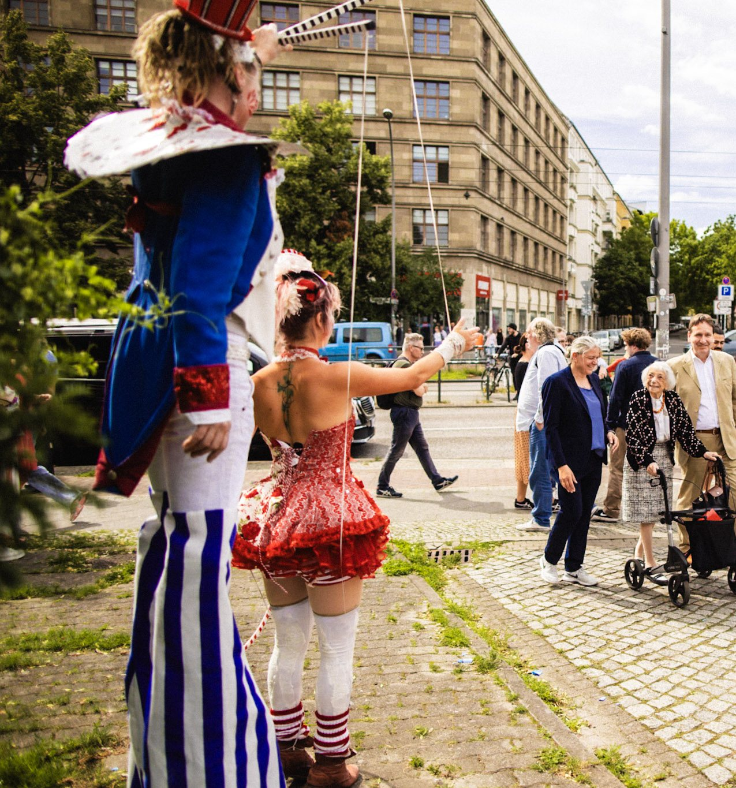

Tagsüber
Motto-Walkacts und Nesaia mit dem Akkordeon ziehen durch Straßen und Parks, posieren, musizieren und spielen mit dem Publikum. Mehrere Sets von 20 bis 30 Minuten, solo oder als Ensemble.
Walking Acts für den ganzen Festivaltag, Hoop-Highlights unter freiem Himmel und eine Lichtshow, wenn es dunkel wird.

Ley Lotta ist Zirkusartistin, Musikerin und Kostümbildnerin aus Berlin. Ihre Figuren sind komplett von Hand gemacht und leben von der direkten Begegnung: Sie mischen sich unters Publikum, spielen kleine Szenen, musizieren und verwandeln Straßen und Plätze in ein Märchenbild.
Für Festivals bietet sie ein Programm, das den ganzen Tag trägt: tagsüber Multi-Hoop-Artistik und Motto-Walkacts, nach der Dämmerung leuchtende Lichtwesen und als Höhepunkt die LED-Show Lucina's Light.
Gespielt hat sie unter anderem auf der Fusion, in Garbicz, bei at.tension, der Bucht der Träumer und der Kulturellen Landpartie, bei den Schlössernächten in Dresden und Potsdam sowie in den Galashows der European Juggling Convention, der Phoenix Fire Convention und des Jai Thep Festivals in Thailand.
Motto-Walkacts und Nesaia mit dem Akkordeon ziehen durch Straßen und Parks, posieren, musizieren und spielen mit dem Publikum. Mehrere Sets von 20 bis 30 Minuten, solo oder als Ensemble.
Der Multi-Hoop-Act als Highlight: ein fünfeinhalbminütiger Showstopper, Podest-Sets an festen Spielorten oder Pop-Up-Auftritte mitten auf dem Platz.
Lucina, die Aqualumières und Nesaia im leuchtenden Kleid erscheinen zwischen den Leuten, dazu der Hoop-Act mit LED-Reifen.
Lucina's Light als Abendshow: Musik, Artistik und leuchtende Flügel, als ganze Produktion von etwa 30 Minuten oder als kürzere Fassung ab zehn Minuten.
Kunstvolle, präzise Multi-Hoop-Artistik als fünfeinhalbminütiger Showstopper, als Podest-Set im Festivalprogramm oder als interaktiver Walkact mitten im Publikum.
Eine Wassernymphe mit Akkordeon: Seemannslieder und sehnsuchtsvolle Melodien am Tag, Glühwürmchen und leuchtendes Kleid in der Nacht.
Varieté und Vintage-Zirkus, Goldene Zwanziger, Candyland, maritim, floral, Märchen und Fantasy: handgenähte Figuren, die kein Licht brauchen, um zu strahlen.
Für größere Festivalflächen kommt Ley mit ihrer Company: Stelzenläufer:innen, ganze Kostümgruppen, Feuer- und LED-Artistik.
Die poetische LED-Soloshow aus Musik, Hoop-Artistik, Visual Poi und leuchtenden Flügeln. Als ganze Produktion in sechs Akten oder als kürzerer Höhepunkt des Abendprogramms.
Lucina zieht mit leuchtenden Flügeln durch die Menge und verschenkt kleine Lichtmomente. Ideal als Einstimmung auf die Show oder als Ausklang danach.
Zwei Glasfaser-Wesen schweben wie Laternen aus der Tiefsee durch die Festivalnacht. Das ruhigste und eleganteste der Lichtwesen.
Eine ebene Spielfläche ab 4 × 5 Metern und 3 Metern Höhe genügt, auf einem Platz, in einem Park oder auf einer Festivalbühne. Größer geht immer.
Ab der Dämmerung. Die LED-Kostüme und Lichtrequisiten brauchen Dunkelheit, um ihren Zauber zu entfalten. Tagsüber sind die Hoop-Highlights und die Motto-Walkacts die richtige Wahl.
In der Regel 20 bis 30 Minuten pro Set, mehrere Sets über den Festivaltag verteilt. Die genaue Taktung stimmen wir auf Ihr Programm ab.
Beides ist möglich: solo, als Duo oder mit einem größeren Ensemble aus Leys Künstler:innenpool, auch mit Stelzenläufer:innen.
Ja, für Lucina's Light und den Hoop-Act schickt Ley Ihnen gern den Technical Rider und eine Vollaufnahme der Show.
Nennen Sie Festival, Datum und die Acts, die Sie interessieren. Sie bekommen zeitnah einen Vorschlag mit Ablauf, Technical Rider und Angebot.
Lieber direkt? info@leylotta.com